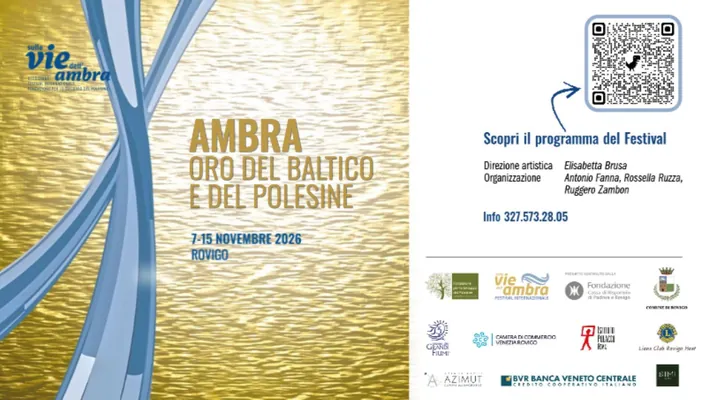

da gio 29 ott a dom 15 nov
Sulle vie dell’Ambra
Prima di essere percorsi di pellegrinaggio, molte delle vie che attraversavano l’Europa erano preziose rotte commerciali lungo le quali viaggiavano merci e persone. Tra queste, le antiche Vie dell’Ambra collegavano il Baltico al Mediterraneo, creando connessioni tra popoli e…
 Indicazioni
Indicazioni
- Costi e prenotazioni
- Costo non indicato · Prenotazione non indicata
- Programma
- Programma da verificare. Apri la fonte ufficiale per orari e possibili aggiornamenti.
- In caso di maltempo
- Nessuna indicazione specifica pubblicata.
- Note
- Acquisito automaticamente dalla fonte.
L’EVENTO
Descrizione completa
Prima di essere percorsi di pellegrinaggio, molte delle vie che attraversavano l’Europa erano preziose rotte commerciali lungo le quali viaggiavano merci e persone. Tra queste, le antiche Vie dell’Ambra collegavano il Baltico al Mediterraneo, creando connessioni tra popoli e territori lontani.
È lungo queste strade storiche che affonda le proprie radici anche Romea Strata , che oggi attraversa sette Paesi europei, dall’Estonia all’Italia, fino a Roma. Un mosaico di vie percorse nei secoli da mercanti e pellegrini, che ancora oggi continua ad essere crocevia di storie, scambi culturali e incontri contribuendo a costruire l’identità europea.
Giunto alla sua terza edizione, il Festival sulle Vie dell’Ambra celebra la storia e il patrimonio culturale legati alla preziosa resina fossile. L’edizione 2026 guarda in particolare alla Polonia e alla città di Danzica, considerata la capitale mondiale dell’ambra, e introduce un approfondimento dedicato ai cammini, che ripercorrono le antiche direttrici commerciali e di pellegrinaggio.
Il Museo dei Grandi Fiumi, sede principale del Festival, e altri luoghi della città ospiteranno un programma di mostre, conferenze, concerti, laboratori ed esperienze immersive.
Quest’anno Romea Strata partecipa al Festival, portando il proprio contributo alla riflessione sulle antiche vie di comunicazione che collegavano l’Europa settentrionale e centro-orientale a Roma.
L’appuntamento è per domenica 15 novembre alle ore 10.30, con la tavola rotonda “Sulle Vie Romee”, dedicata ai pellegrinaggi giunti dalla Polonia a Roma lungo le antiche Vie dell’Ambra. L’incontro approfondirà il ruolo del Polesine come territorio di convergenza di grandi cammini europei, tra cui la Via Romea Germanica e la Romea Strata, che attraverso il Brennero e Tarvisio scendevano verso Ferrara, Ravenna e infine Roma.
Tra i relatori sarà presente Aleksandra Grbic, coordinatrice del progetto Romea Strata, insieme a storici, archeologi ed esperti. La tavola rotonda sarà accompagnata da letture animate di documenti storici e proiezioni dedicate ai luoghi attraversati dagli antichi pellegrini.
Un’occasione per riscoprire il legame tra le vie commerciali del passato e i cammini di oggi. Una connessione che continua a unire i territori europei.
Le prime attività del Festival sono già iniziate! Scopri tutti gli appuntamenti e consulta il programma completo per conoscere le iniziative in calendario.
IL PROGRAMMA
Programma e orari
Appuntamenti raccolti dalle fonti elencate. Dove manca un orario, non è ancora disponibile in questa scheda.
Programma pubblicato
- 2026-10-29 — 2026-10-29 · 11:30:00
- 2026-11-07 — 2026-11-15 ·
INFORMAZIONI UTILI
Prima di partire
- Controllare la fonte prima di partire.
ORGANIZZAZIONE